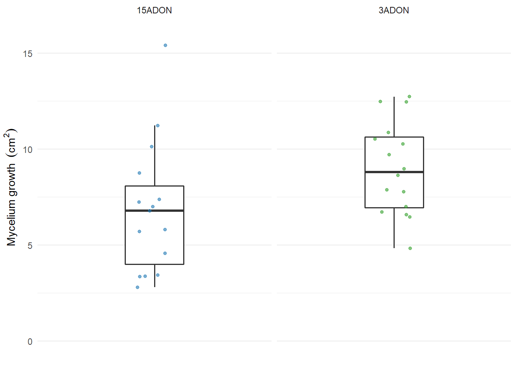
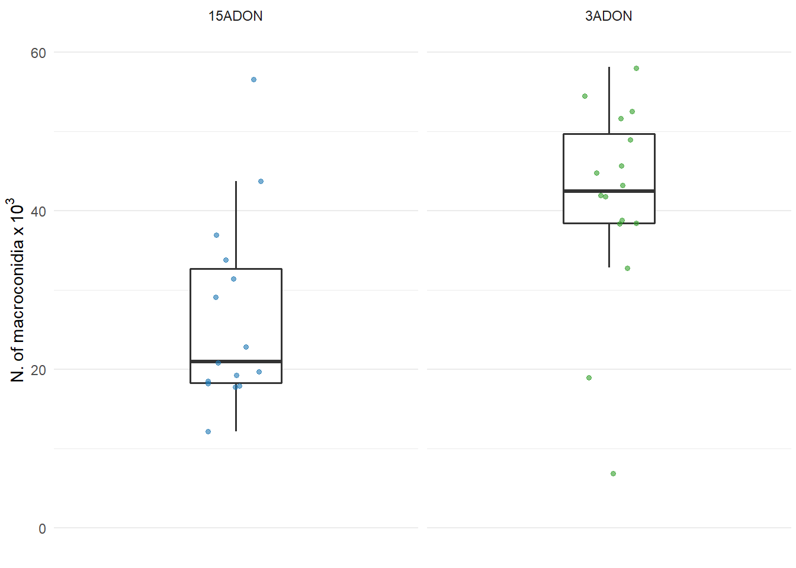
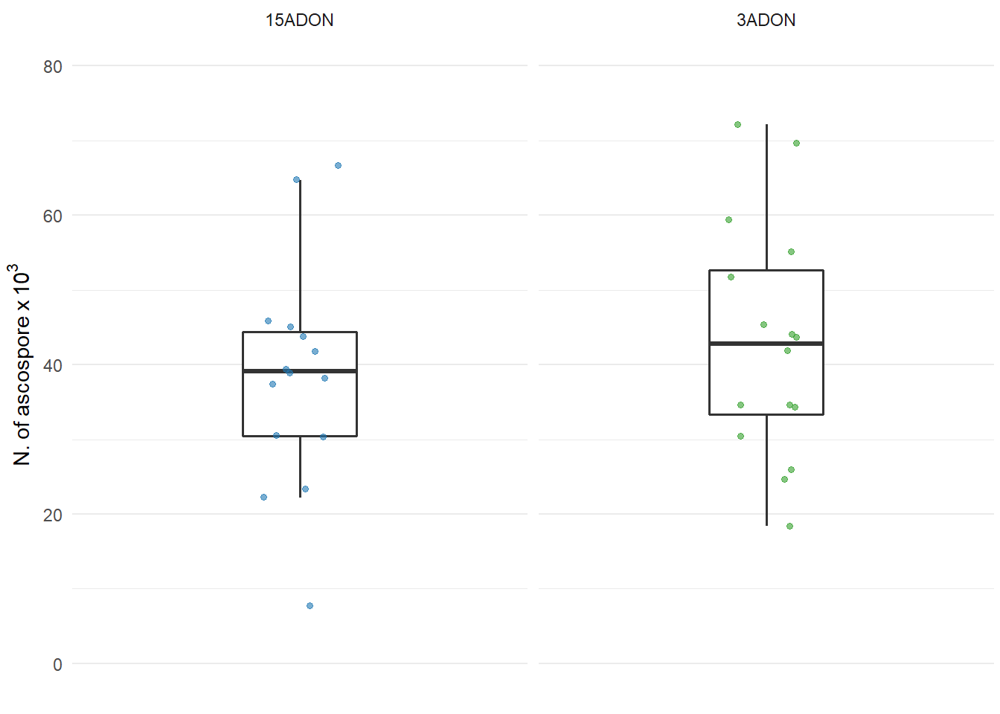
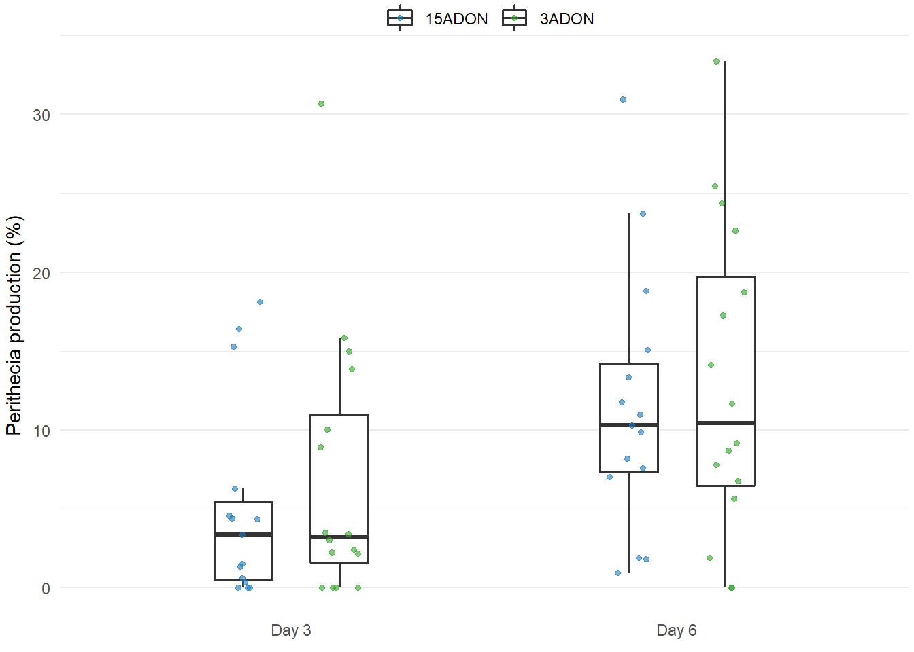
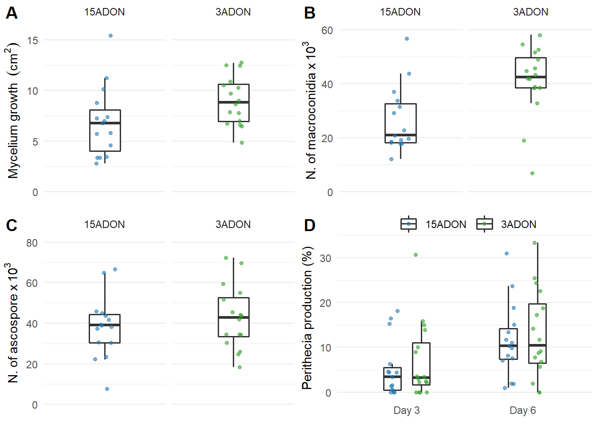
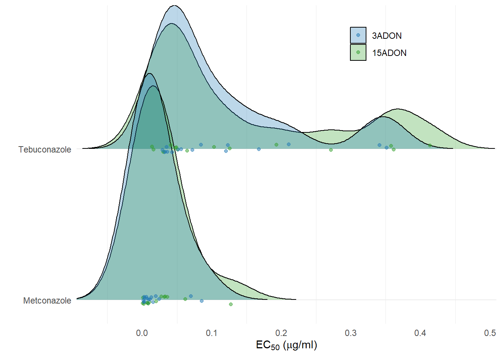
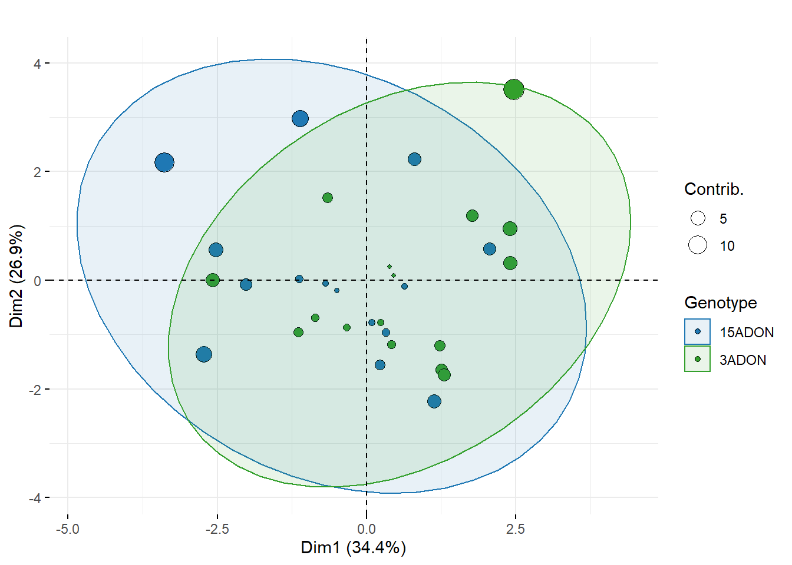
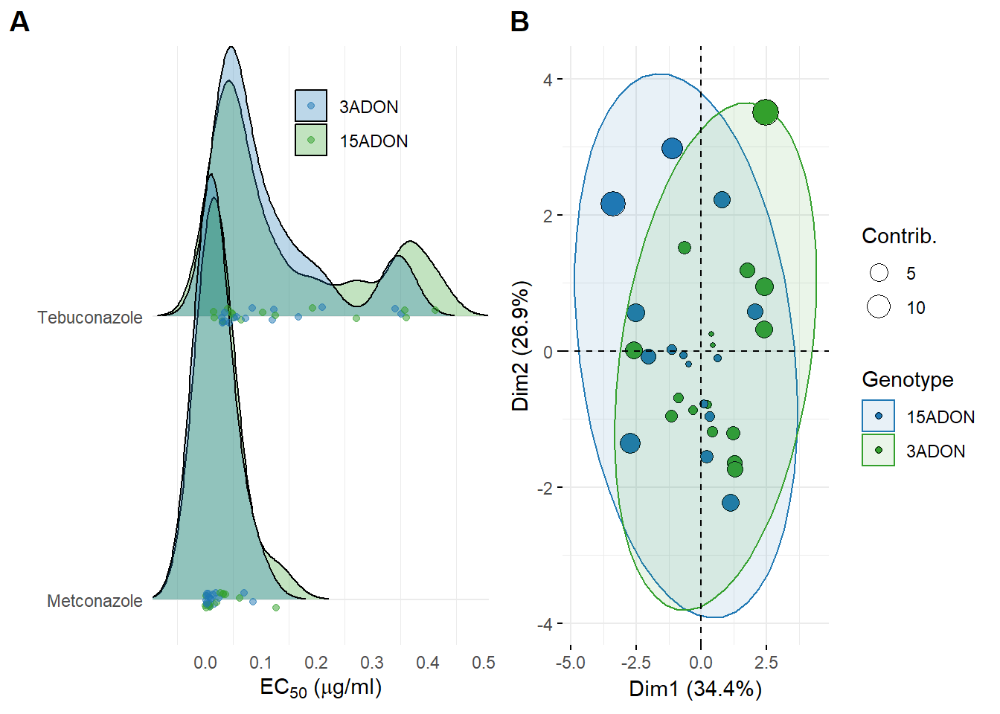

knitr::opts_chunk$set(echo = TRUE, warning = FALSE)library(tidyverse)
library(readxl)
library(cowplot)
library(janitor)
fhb_spe1<- read_excel("data/freq_tri.xlsx")mycelium <- read_excel("data/dat-fitness.xlsx", sheet = "mycelium")
# Removing the mycelium plug area
mycelium["day1"] = mycelium["d1_cm"] -0.283
mycelium["day2"] = mycelium["d2_cm"] -0.283
# Estimating the average radial growth rate (cm2 per day)
mycelium$growth <- (mycelium$day2 - mycelium$day1)
# Summarizing the data
mycelium1 <- mycelium %>%
group_by(experiment, isolate, tri, rep) %>% summarize(mgr = mean(growth))
plot_mycelium <- mycelium1 %>%
group_by(isolate, tri) %>%
summarise(growth = mean(mgr, na.rm = T)) %>%
ggplot(aes(tri, growth))+
geom_boxplot(size = 0.6,
outlier.colour = NA, width=0.3
) +
geom_jitter(size = 1.3, width = 0.1,
alpha=0.6, aes(color=tri))+
facet_grid (~ tri, scales = "free") +
theme_minimal()+
scale_color_manual(breaks = c("15ADON", "3ADON"), values=c("#1F78B4", "#33A02C"))+
scale_fill_manual(breaks = c("15ADON", "3ADON"), values=c("white", "white"))+
theme(legend.position = "none",
plot.margin = unit(c(-0.6, 0.1, -0.2, 0.1), "cm"),
legend.margin=margin(0,0,0,0),
legend.box.margin=margin(-0,-10,-10,-10),
panel.grid.major.x = element_blank(),
axis.text.x=element_blank())+
labs(y = expression(paste("Mycelium growth " ~ (cm^2))),
x = "",
title = "",
color = "", fill = "")+
ylim(0, 16)
plot_mycelium
conidia <- read_excel("data/dat-fitness.xlsx", sheet = "conidia")
conidia1 <- conidia %>%
group_by(experiment, isolate, tri, rep) %>% summarize(spores = mean(conc_spores))
plot_conidia <- conidia1 %>%
group_by(isolate, tri) %>%
summarise(conidia = mean(spores, na.rm = T)) %>%
ggplot(aes(tri, conidia)) +
geom_boxplot(size = 0.6,
outlier.colour = NA, width=0.3
) +
geom_jitter(size = 1.3, width = 0.1,
alpha=0.6, aes(color=tri)) +
facet_grid (~ tri, scales = "free") +
theme_minimal() +
scale_color_manual(breaks = c("15ADON", "3ADON"), values=c("#1F78B4", "#33A02C")) +
scale_fill_manual(breaks = c("15ADON", "3ADON"), values=c("white", "white")) +
theme(legend.position = "none",
plot.margin = unit(c(-0.6, 0.1, -0.2, 0.1), "cm"),
legend.margin=margin(0,0,0,0),
legend.box.margin=margin(-0,-10,-10,-10),
panel.grid.major.x = element_blank(),
axis.text.x=element_blank())+
labs(y = expression(N.~of~macroconidia~x~10 ^ {3}),
x = "", title = "",
color = "", fill = "")+
ylim(0,60)
plot_conidia
ascospore <- read_excel("data/dat-fitness.xlsx", sheet = "ascospore")
ascospore1 <- ascospore %>%
group_by(experiment, isolate, tri, location, region, crop, rep) %>% summarize(ascospore = mean(conc_spores))
plot_ascospore <- ascospore1 %>%
group_by(isolate, tri) %>%
summarise(ascospore = mean(ascospore, na.rm = T)) %>%
ggplot(aes(tri, ascospore)) +
geom_boxplot(size = 0.6,
outlier.colour = NA, width=0.3,
#position = position_dodge(width = 0.9)
) +
geom_jitter(size = 1.3, width = 0.1,
#position=position_jitterdodge(dodge.width=0.9),
alpha=0.6, aes(color=tri))+
#scale_fill_grey(start = 1, end = 1)+
facet_grid (~ tri, scales = "free") +
theme_minimal()+
scale_color_manual(breaks = c("15ADON", "3ADON"), values=c("#1F78B4", "#33A02C"))+
scale_fill_manual(breaks = c("15ADON", "3ADON"), values=c("white", "white"))+
theme(legend.position = "none",
plot.margin = unit(c(-0.6, 0.1, -0.2, 0.1), "cm"),
legend.margin=margin(0,0,0,0),
legend.box.margin=margin(-0,-10,-10,-10),
panel.grid.major.x = element_blank(),
axis.text.x=element_blank())+
labs(y = expression(N.~of~ascospore~x~10 ^ {3}),
x = "", title = "",
color = "", fill = "")+
ylim(0,80)
plot_ascospore
peritecia <- read_excel("data/dat-fitness.xlsx", sheet = "perithecia")
peritecia1 = peritecia %>%
gather("Day 3", "Day 6", key = day, value = percentage) %>%
arrange(isolate)
plot_perithecia <- peritecia1 %>%
group_by(isolate, tri, day) %>%
summarise(percentage = mean(percentage, na.rm = T)) %>%
ggplot(aes(x = day,
y = percentage,
fill = tri)) +
geom_boxplot(size = 0.6,
outlier.colour = NA, width=0.3,
position = position_dodge(width = 0.5)
) +
geom_jitter(position=position_jitterdodge(dodge.width=0.5, jitter.width = 0.1),
size=1.3,
alpha=0.6,
aes(colour=tri)) +
theme_minimal() +
scale_color_manual(breaks = c("15ADON", "3ADON"), values=c("#1F78B4", "#33A02C"))+
scale_fill_manual(breaks = c("15ADON", "3ADON"), values=c("white", "white")) +
labs(y = expression(paste("Perithecia production (%)")),
x = "",
title = "",
color = "", fill = "") +
theme(legend.position = "top",
plot.margin = unit(c(-0.6, 0.1, -0.2, 0.1), "cm"),
legend.margin=margin(0,0,0,0),
legend.box.margin=margin(-0,-10,-10,-10),
panel.grid.major.x = element_blank())
plot_perithecia
grid1 <- plot_grid(plot_mycelium, plot_conidia, plot_ascospore, plot_perithecia, labels=c('A', 'B', 'C', 'D'), align = "hv", ncol=2) +
ggsave("figures/grid1.png", width=10, height=5, dpi=300)
grid1
fung <- read_csv("data/ec50.csv")
ec50 <- fung %>%
select(-X1)
plot_fungicide <- ec50 %>%
group_by(isolate, tri, fungicide) %>%
summarise(ec50 = mean(Estimate, na.rm = T)) %>%
ggplot(aes(x = ec50, fungicide, fill = factor(tri))) +
geom_joy(scale = 1.5, alpha = 0.3, rel_min_height = 0.001) +
geom_jitter(alpha=0.5, height = 0.03, size = 1.5, aes(color = factor(tri))) +
scale_color_manual(breaks = c("3ADON", "15ADON"), values = c(alpha("#1F78B4", 0.5), alpha("#33A02C", 0.5))) +
scale_fill_manual(breaks = c("3ADON", "15ADON"), values = c(alpha("#1F78B4", 0.5), alpha("#33A02C", 0.5))) +
scale_y_discrete(expand = c(0.01, 0.15)) +
scale_x_continuous(expand = c(0, 0)) +
theme_minimal() +
theme(legend.position = c(0.8, 1),
#plot.margin = unit(c(0, 0.1, -0.2, 0.1), "cm"),
legend.justification = c("right", "top"),
panel.grid.major.x = element_blank(),
axis.title.x = element_text(hjust=0.5))+
labs(x = (expression(paste('EC'[50], ' (', mu,'g/ml)'))), y = "", fill = "", color = "")
plot_fungicide
dat_multivar <- read_csv("data/dat_multivar.csv") %>%
select(-isolate) %>%
select(-X1)
dat_mul_new <- dat_multivar %>%
rename(Genotype = tri)
# Selecting only the dependent variables
dat_multivar_pca <- dat_multivar %>%
select(-tri)
res.pca <- PCA(dat_multivar_pca, graph = FALSE)
## Graphic
biplot <- fviz_pca_biplot(res.pca,
geom.ind = "point",
fill.ind = dat_mul_new$Genotype, #col.ind = "black",
pointshape = 21,
pointsize = "contrib",
mean.point = FALSE, #remove group mean point
palette = c("#1F78B4", "#33A02C"),
addEllipses = TRUE, #ellipse.type = "confidence",ellipse.level = 0.95,
# Variables
alpha.var ="contrib",
invisible = "var",
)+
scale_color_manual( values=c("#1F78B4", "#33A02C")) +
labs(title = "", fill = "Genotype", color = "Genotype", size = "Contrib.")
biplot
grid2 <- plot_grid(plot_fungicide, biplot, labels=c('A', 'B'), align = "hv") +
ggsave("figures/grid2.png", width=10, height=4, dpi=300)## Picking joint bandwidth of 0.0318grid2